CAB420 - Assignment 2
Contents
Part A: SVMs and Bayes Classifiers
1)
clear close all load data_ps3_2.mat;
set 1 - linear
svm_test(@Klinear, 1, 1000, set1_train, set1_test); title('Set 1 - Linear'); hold off;
set 2 - polynomial
svm_test(@Kpoly, 2, 1000, set2_train, set2_test); title('Set 2 - Polynomial'); hold off;
set 3 - gaussian
svm_test(@Kgaussian, 1, 1000, set3_train, set3_test); title('Set 3 - Gaussian'); hold off;
The interior-point-convex algorithm does not accept an initial point. Ignoring X0. Minimum found that satisfies the constraints. Optimization completed because the objective function is non-decreasing in feasible directions, to within the value of the optimality tolerance, and constraints are satisfied to within the value of the constraint tolerance. WARNING: 3 training examples were misclassified!!! TEST RESULTS: 0.0446 of test examples were misclassified. The interior-point-convex algorithm does not accept an initial point. Ignoring X0. Minimum found that satisfies the constraints. Optimization completed because the objective function is non-decreasing in feasible directions, to within the value of the optimality tolerance, and constraints are satisfied to within the value of the constraint tolerance. TEST RESULTS: 0.011 of test examples were misclassified. The interior-point-convex algorithm does not accept an initial point. Ignoring X0. Minimum found that satisfies the constraints. Optimization completed because the objective function is non-decreasing in feasible directions, to within the value of the optimality tolerance, and constraints are satisfied to within the value of the constraint tolerance. TEST RESULTS: 0 of test examples were misclassified.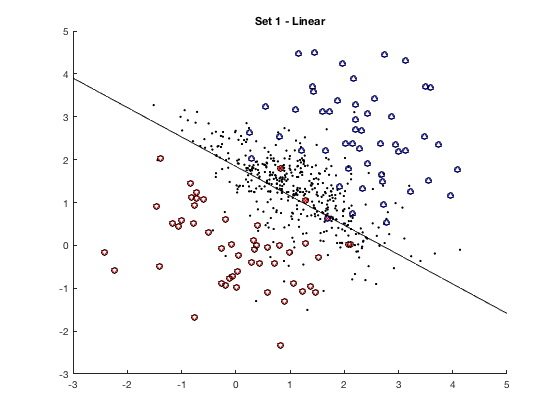 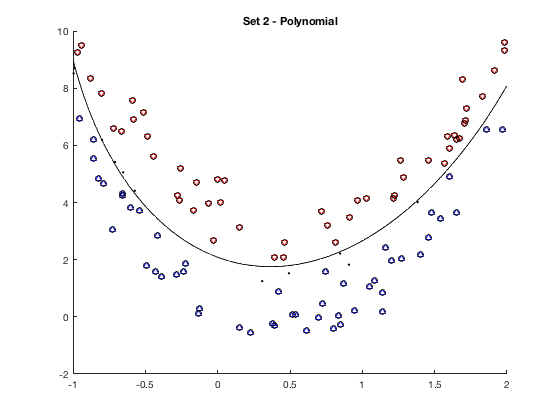 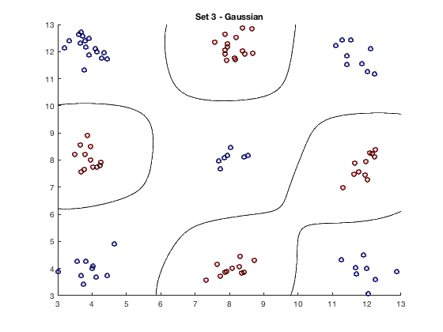
2)
% set 4 - all of them
linear_error = svm_test2(@Klinear, 1, 1000, set4_train, set4_test);
poly_error = svm_test2(@Kpoly, 2, 1000, set4_train, set4_test);
gauss_error = svm_test2(@Kgaussian, 1.5, 1000, set4_train, set4_test);
The guassian method has the best results, with only 0.085 test examples being miscalsified. Polynomial was next best with 0.12, and linear was the worst with 0.1375
The interior-point-convex algorithm does not accept an initial point. Ignoring X0. Minimum found that satisfies the constraints. Optimization completed because the objective function is non-decreasing in feasible directions, to within the value of the optimality tolerance, and constraints are satisfied to within the value of the constraint tolerance. TEST RESULTS: 0.1375 of test examples were misclassified. The interior-point-convex algorithm does not accept an initial point. Ignoring X0. Minimum found that satisfies the constraints. Optimization completed because the objective function is non-decreasing in feasible directions, to within the value of the optimality tolerance, and constraints are satisfied to within the value of the constraint tolerance. TEST RESULTS: 0.12 of test examples were misclassified. The interior-point-convex algorithm does not accept an initial point. Ignoring X0. Minimum found that satisfies the constraints. Optimization completed because the objective function is non-decreasing in feasible directions, to within the value of the optimality tolerance, and constraints are satisfied to within the value of the constraint tolerance. TEST RESULTS: 0.085 of test examples were misclassified.
Part B: PCA & Clustering
clear and load stuff
clear close all X = load('data/faces.txt'); % load face dataset
understand the data
i=2; img = reshape(X(i,:),[24 24]); % convert vectorized datum to 24x24 image patch imagesc(img); axis square; colormap gray; % display an image patch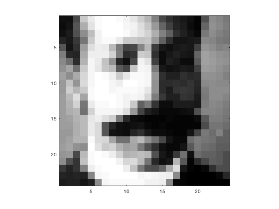
a)
[m, n] = size(X); % subtract the mean of the face images to make the data sero-mean mu = mean(X); X0 = bsxfun(@minus, X, mu); % take the SVD of the data [U, S, V] = svd(X0); W=U*S;
b)
K = 1:10; meansquarederr = zeros(size(K)); for i=1:length(K) X0_hat = W(:, 1:K(i))*V(:, 1:K(i))'; meansquarederr(i) = sum(mean((X0-X0_hat).^2)); end figure(); hold on; plot(meansquarederr); xlabel('K'); ylabel('MSE'); title('Mean Squared Error for K from 1 to 10'); hold off;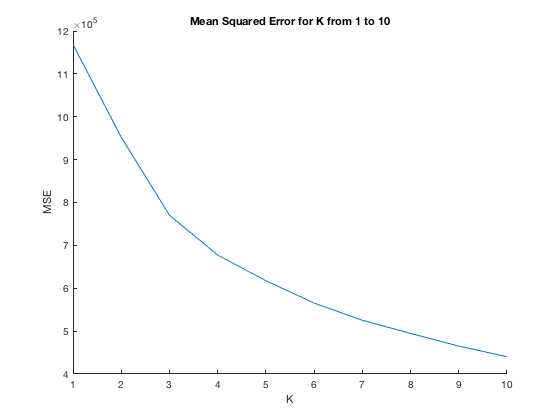
c)
positive_principals = {};
negative_principals = {};
Compute the principal directions
for j=1:10 alpha = 2*median(abs(W(:, j))); % scale factor positive_principals{j} = mu + alpha*(V(:, j)'); negative_principals{j} = mu - alpha*(V(:, j)'); end
Reshape them and view them as images
for i=1:3 img = reshape(positive_principals{i}, [24, 24]); figure('name', sprintf('Positive Principal Direction %d', i)); imagesc(img); title(sprintf('Positive Principal Direction %d', i)); axis square; colormap gray; img = reshape(negative_principals{i}, [24, 24]); figure('name', sprintf('Negative Principal Direction %d', i)); imagesc(img); title(sprintf('Negative Principal Direction %d', i)) axis square; colormap gray; end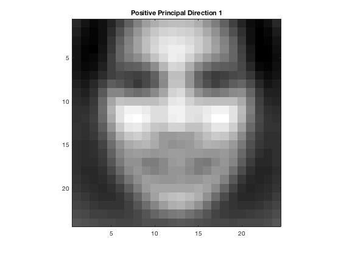 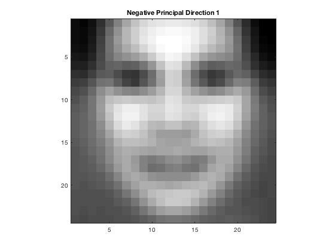 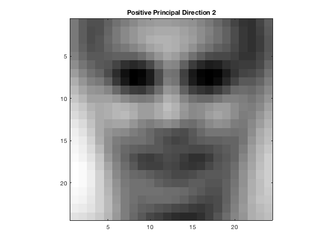 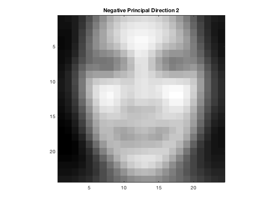 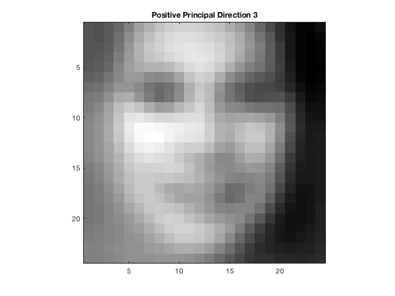 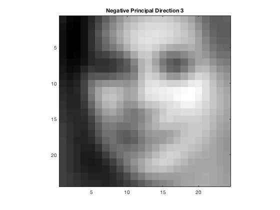
d
idx = randperm(576, 20); % Generate random numbers for the index figure; hold on; axis ij; colormap(gray); title('Latent Space') xlabel('Principal Component 1'); ylabel('Principal Component 2'); range = max(W(idx, 1:2)) - min(W(idx, 1:2)); % find range of coordinates to be plotted scale = [200 200]./range; % want 24x24 to be visible for i=idx imagesc(W(i,1)*scale(1),W(i,2)*scale(2), reshape(X(i,:), 24, 24)); end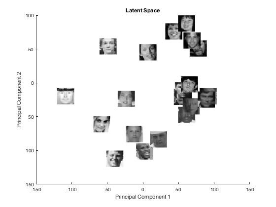
e
K = [5, 10, 50]; % the number of principal directions idx = randperm(576, 2); % pick two random faces for f=1:length(idx)% for every face figure; imagesc(reshape(X(idx(f),:), [24, 24])); axis square; colormap gray; title(sprintf('Face %d', idx(f))); for i=1:length(K) % for every K value get a face estimation figure; imagesc(reshape(W(idx(f), 1:K(i))*V(1:576, 1:K(i))', 24, 24)); axis square; colormap gray; title(sprintf('Face %d reconstructed with K=%d principal directions', idx(f), K(i))); end end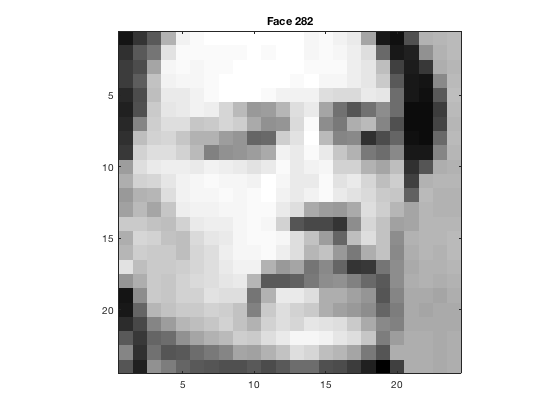 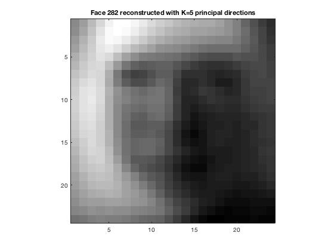 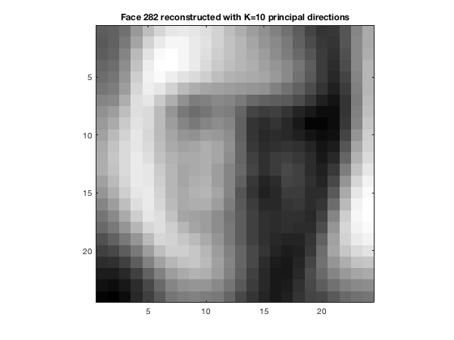 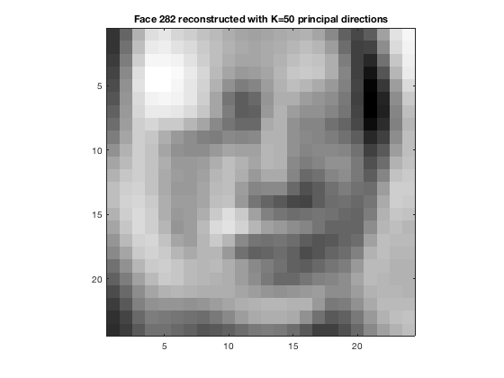 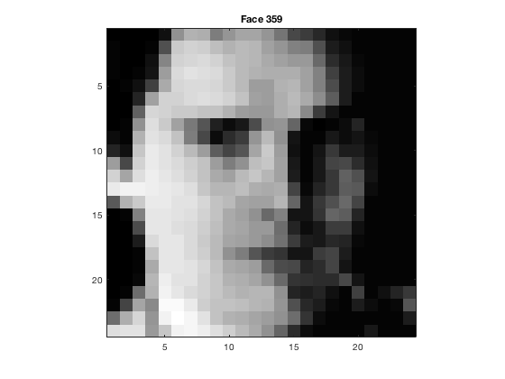 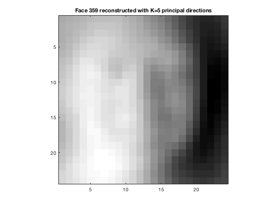 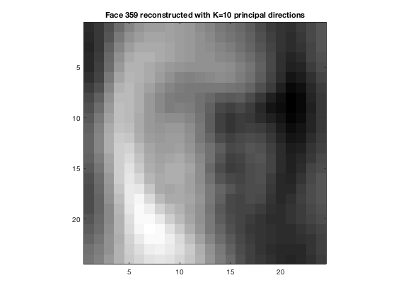 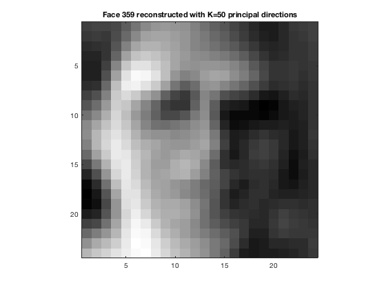
Clustering
a)
Clear everything out
close all clear % load the iris data restricted to the first two features load('iris.txt'); iris = iris(:,1:2); % plot the data to see the clustering scatter(iris(:,1), iris(:,2), 15, 'b*');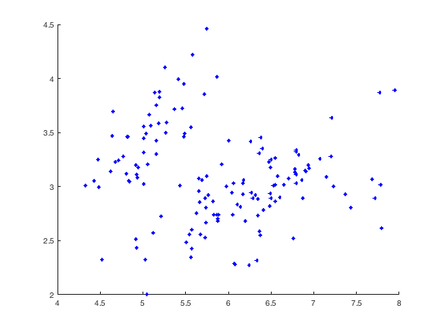
b) run k-means on the data
K=5
K1=5;
initial_k5 = [
4.68 3.22;
5.48 3.95;
4.52 2.32;
6.18 3.06;
7.2 3.2;
];
centroids = initial_k5;
for i = 1:100
idx = findClosestCentroids(iris, centroids);
centroids = computeCentroids(iris, idx, K1);
end
% plot
figure; hold on;
plotDataPoints(iris, idx, K1);
plot(centroids(:,1), centroids(:,2), 'kx', 'MarkerSize', 15);
title('K-means clustering k=5');
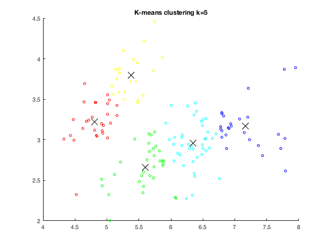 K=20
K2=20;
initial_k20 = [
4.41 3.23;
5.37 3.24;
5.69 2.22;
5.69 3.08;
4.84 2.86;
5.83 2.91;
5.28 2.36;
6.84 2.70;
5.47 4.02;
5.21 3.17;
5.94 2.33;
4.97 2.08;
6.09 2.83;
4.47 3.41;
7.42 3.45;
5.06 3.73;
7.07 3.50;
4.94 3.55;
7.03 2.87;
7.62 2.90;
];
centroids = initial_k20;
for i = 1:10
idx = findClosestCentroids(iris, centroids);
centroids = computeCentroids(iris, idx, K2);
end
% plot
figure; hold on;
plotDataPoints(iris, idx, K2);
plot(centroids(:,1), centroids(:,2), 'kx', 'MarkerSize', 15);
title('K-means clustering k=20');
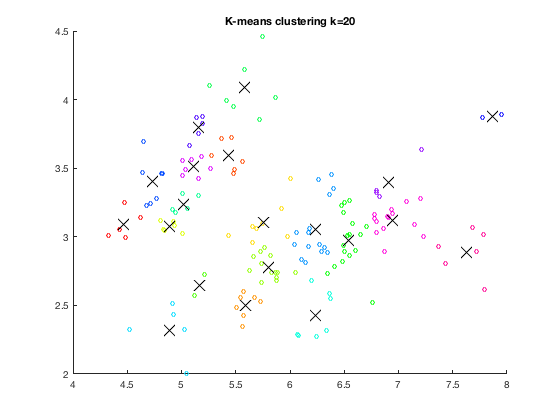 c) agglomerative clustering
sLink = linkage(iris, 'single'); cLink = linkage(iris, 'complete');
5 clusters
colors5 = jet(5); clust = cluster(sLink, 'maxclust', 5); figure; scatter(iris(:,1), iris(:,2), 15, colors5(clust,:), 'filled'); title('Single linkage agglomerative clustering with 5 clusters'); clust = cluster(cLink, 'maxclust', 5); figure; scatter(iris(:,1), iris(:,2), 15, colors5(clust,:), 'filled'); title('Complete linkage agglomerative clustering with 5 clusters');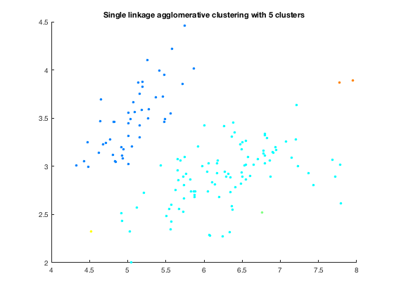 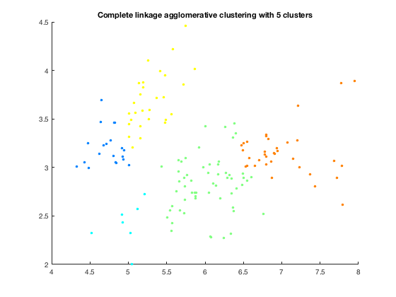
20 clusters
colors20 = jet(20); clust = cluster(sLink, 'maxclust', 20); figure; scatter(iris(:,1), iris(:,2), 15, colors20(clust,:), 'filled'); title('Single linkage agglomerative clustering wtih 20 clusters'); clust = cluster(cLink, 'maxclust', 20); figure; scatter(iris(:,1), iris(:,2), 15, colors20(clust,:), 'filled'); title('Complete linkage agglomerative clustering with 20 clusters');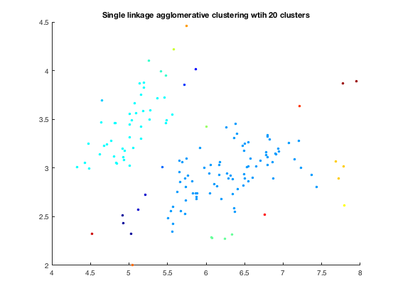 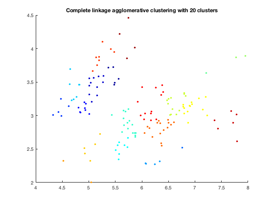
Single linkage with 5 clusters gives poor results, forming only two clusters with more than one point. Complete linkage gives much better results, with 5 relativley equal groups positioned in a logical manner. K-means clustering is slightly better as the groups have a more similar number of elements in them.
Single linkage with 20 clusters also give poor results, with many clusters having few points, and only two main groups. Complete linkage gives better reuslts, with more evenly distributed clusters, but is messy. This is probably too many clusters for this dataset. This looks to be similarly effective to k-means clustering.
d) EM Gaussian
clear; % Load data load('iris.txt'); iris = [iris(:,1), iris(:,2)]; % set the colormaps for the different number of clusters colors5 = jet(5); colors20 = jet(20);
5 components
can try changing the initial clusters to get better results
K = 5;
initial_clusters = [
4.68 3.22;
5.48 3.95;
4.52 2.32;
6.18 3.06;
7.2 3.2;
];
% run EM gaussian mixture model
[assign, clusters, ~, ~] = emCluster(iris, 5, initial_clusters);
figure; hold on;
scatter(iris(:,1), iris(:,2), 15, colors5(assign,:), 'filled');
for i = 1:K
plotGauss2D(clusters.mu(i,:), clusters.Sig(:,:,i), 'k', 'linewidth', 1);
end
title('EM Gausian mixture Model with 5 Components');
Warning: emclust:iter :: stopped after reaching maximum number of iterations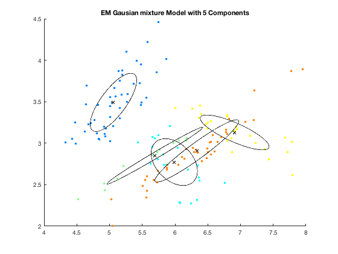
20 components
K = 20;
initial_clusters = [
6.4913 2.9333;
4.4814 2.9917;
6.2679 2.9460;
6.8588 3.0600;
4.7738 3.2812;
4.9284 2.4325;
5.7432 3.0969;
7.7151 2.8911;
5.8724 2.7003;
6.4796 2.8164;
6.3604 2.5873;
5.4780 3.4583;
7.9528 3.8910;
6.4738 3.2295;
6.4996 3.2526;
6.1055 2.8347;
4.3266 3.0099;
4.9465 3.1763;
5.1536 3.3008;
4.8142 3.4620;
];
% run EM gaussian mixture model
[assign, clusters, ~, ~] = emCluster(iris, 20, initial_clusters);
% Plot the results
figure; hold on;
scatter(iris(:,1), iris(:,2), 15, colors20(assign,:), 'filled');
for i = 1:K
plotGauss2D(clusters.mu(i,:), clusters.Sig(:,:,i), 'k', 'linewidth', 1);
end
title('EM Gausian mixture Model with 20 Components');
Warning: emclust:iter :: stopped after reaching maximum number of iterations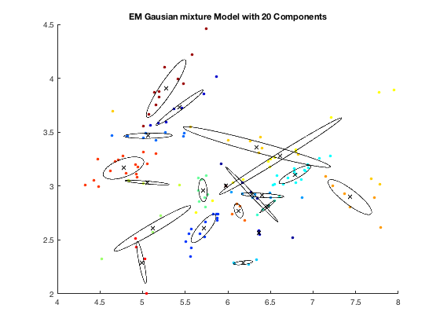
The EM gaussian mixture model with 5 components doesnt give great results, it is worse than the complete linkage and the k-means models. The groups are overlapping each other and dont make much sense as groupings.
The EM gaussian mixutre model with 20 components is once again very messy, and also has overlapping groups. This is worse than the k-means and complete linkage clustering algorithms